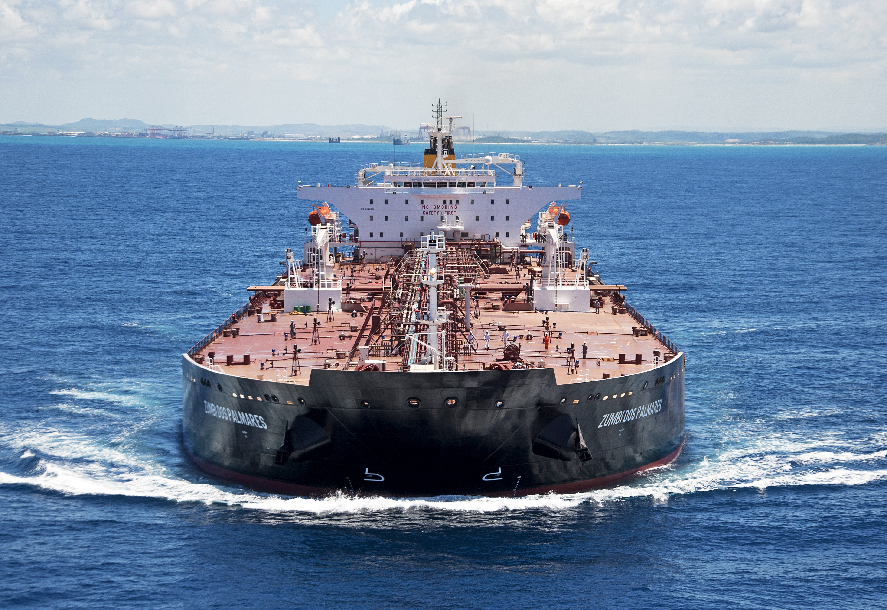

ARMAZENAMENTO
Como funciona?O Que Fazemos
Capítulo 03 · Logística MidstreamAtuamos de forma direta e especializada no escoamento e na logística integrada de petróleo bruto (óleo cru), operando o elo estratégico do segmento midstream que conecta poços e plataformas de produção offshore e onshore diretamente aos terminais marítimos, parques de tancagem e refinarias de processamento.
Nossa operação prioriza a agilidade no fluxo de escoamento, a preservação da integridade física e química da carga (controle de viscosidade, temperatura de fluidez e teor de sedimentos BSW) e a máxima segurança operacional, eliminando riscos de perda primária de contenção em todas as etapas da cadeia logística.
Operação ininterrupta entre campos de produção, estações de bombeamento e terminais.
Monitoramento permanente de grau API, BSW (água e sedimentos) e vazão volumétrica.
Protocolos preventivos rigorosos contra vazamentos e preservação de ecossistemas.
Sistemas SCADA e telemetria satelital dedicados ao controle de pressão e rotas.
Modais e Frota para Escoamento de Petróleo Bruto
Matriz Logística EspecializadaO petróleo bruto requer métodos de transporte dimensionados para sua densidade, viscosidade e volume de extração. Nossa matriz combina quatro modais de alto rendimento para assegurar escoamento ininterrupto dos campos até os terminais de entrega.

Oleodutos (Malha Dutoviária)
Tubulações de aço de alta resistência e alta pressão projetadas para o escoamento contínuo 24/7 de grandes volumes de óleo cru entre campos de produção e terminais marítimos ou refinarias, apresentando o menor custo operacional por barril e elevadíssimo índice de segurança mecânica.

Transporte Marítimo (Cabotagem & Longo Curso)
Navios petroleiros com tecnologia obrigatória de Casco Duplo (Double Hull) e navios aliviadores (shuttle tankers com posicionamento dinâmico DP2) desenvolvidos para operações offshore de alívio em plataformas e FPSOs, cabotagem e exportação de óleo cru em longas distâncias marítimas.

Transporte Ferroviário
Composições ferroviárias tracionadas com dezenas de vagões-tanque especializados para movimentação em massa de petróleo bruto por longos trechos terrestres onde não há cobertura de oleodutos, conectando polos de extração no interior diretamente aos terminais litorâneos.

Transporte Rodoviário
Caminhões-tanque articulados de alta resistência utilizados para transporte em trechos curtos, coleta de óleo cru em campos terrestres de difícil acesso ou isolados da rede de dutos, fornecendo máxima flexibilidade de roteamento e suporte operacional pontual.
Monitoramento Contínuo e Integridade da Carga
Tecnologia e Controle OperacionalGarantimos a salvaguarda da carga de petróleo bruto através de sistemas automatizados de controle de pressão, rastreamento contínuo e infraestrutura técnica de proteção ambiental em tempo real.
Telemetria e Pressão 24h
Sistemas SCADA e LDS (Leak Detection System) integrados nos oleodutos e estações, realizando a leitura contínua de pressão hidráulica, vazão e temperatura para identificar microvariações instantaneamente.
Rastreamento via Satélite
Comunicação bidirecional via satélite para navios petroleiros, composições ferroviárias e frotas de transporte terrestre, com cercas virtuais georreferenciadas e bloqueio preventivo contra alterações de percurso.
Lacres Eletrônicos Antifraude
Dispositivos digitais criptografados instalados em todas as válvulas de alívio e bocas de inspeção dos tanques. O registro de abertura requer chave física e validação de coordenadas geográficas no destino homologado.
Pronta Resposta Ambiental
Equipes de emergência ambiental estrategicamente distribuídas nos corredores de transporte, aparelhadas com barreiras flutuantes de contenção, recolhedores de óleo cru (skimmers) e caminhões a vácuo para contenção imediata.
Protocolo de Custódia e Integridade do Petróleo Bruto
Fluxo OperacionalHomologação na Origem
Aferição volumétrica e análise laboratorial das propriedades físico-químicas do óleo cru (grau API e BSW) no campo de extração.
Transferência Hermética
Carregamento em circuito fechado com equalização de pressão e ativação dos lacres eletrônicos nas conexões de saída.
Monitoramento Ativo
Acompanhamento contínuo dos gradientes de pressão, temperaturas de bombeamento e localização satelital em tempo real.
Entrega e Descarregamento
Recepção no terminal marítimo ou refinaria com checagem dos lacres, conferência volumétrica e laudo de entrega.